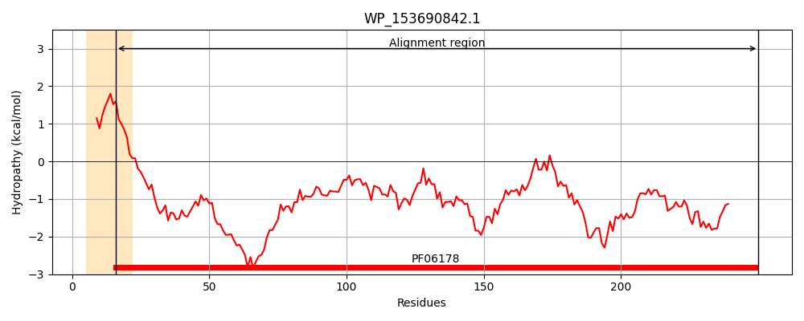
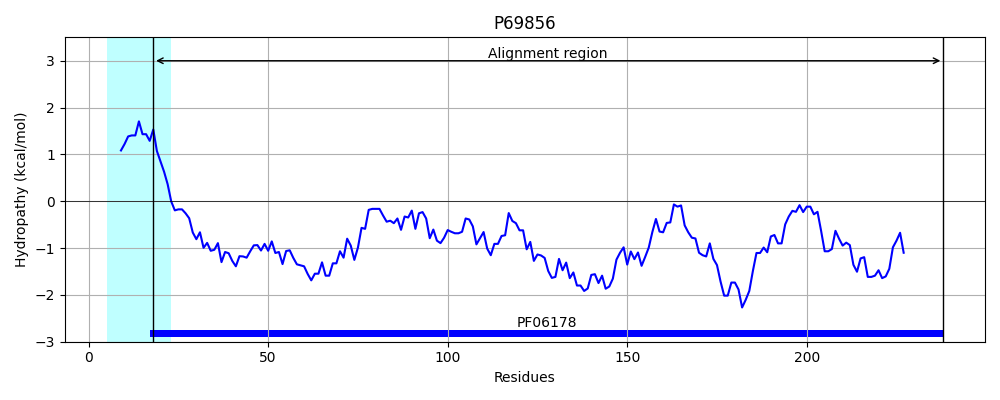
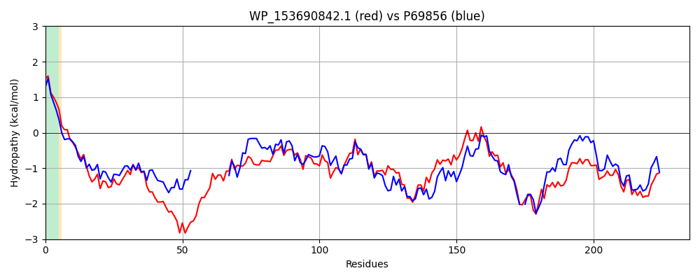

Hit Accession: P69856
Hit TCID: 1.B.35.2.1
Hit Description: gnl|BL_ORD_ID|11289 gnl|TC-DB|P69856|1.B.35.2.1 Probable N-acetylneuraminic acid outer membrane channel protein nanC - Escherichia coli.
Mach Len: 235
e:0.000000
Query TMS Count : 1
Hit TMS Count: 1
TMS-Overlap Score: 0.850000
Predicted Substrates:CHEBI:22563;anion, CHEBI:7758;oligosaccharide
BLAST Alignment:
Score: 531 , Bit scores: 209 bits, E-value: 7.9e-68, Alignment length: 235, Percentage identity: 42
Query: 16 PAAGHALTFDVRGGYRAGSHSYESRYKVSQGWETGWWASMEMDNKNNKNNHQGNQGTDRADGSHSFGDSTVDYNEIEANYSWPFAEKWALQPGGIYHWSSKGTQLRPYLRVNYKATPDLTFGLRYRYDYNTYETVNNAGESHRDSVNRLDLYVAYKFNAQWSALYQGTVYRHVNDDYKYKNDKPSATENALTLRYKWNDWFSPYIEYDYLGKQGYHDGQNKISESRYRIGMTFTL 250
P A T DVRGGYR+GSH+YE+R KVS+GW+ GWWASME + N ++++ ++ ++ ++E NY+ ++W ++PG + H+SS GT+ PY+++++ AT DL FG+RYRYD+ Y + +G+ RD+V+R D YV Y N+ ++ +Q T+Y N DY+Y N K ATENA L+Y +PYIEYDYL +QG ++G++ +SE+ YRIG++F L
Sbjct: 18 PLISQAATLDVRGGYRSGSHAYETRLKVSEGWQNGWWASMESNTWNTIHDNKKE-------------NAALNDVQVEVNYAIKLDDQWTVRPGMLTHFSSNGTRYGPYVKLSWDATKDLNFGIRYRYDWKAYRQQDLSGDMSRDNVHRWDGYVTYHINSDFTFAWQTTLYSKQN-DYRYANHKKWATENAFVLQYHMTPDITPYIEYDYLDRQGVYNGRDNLSENSYRIGVSFKL 238 | Protein Hydropathy Plots: |
|---|
|  |  |
Pairwise Alignment-Hydropathy Plot:
|
|---|
|  |